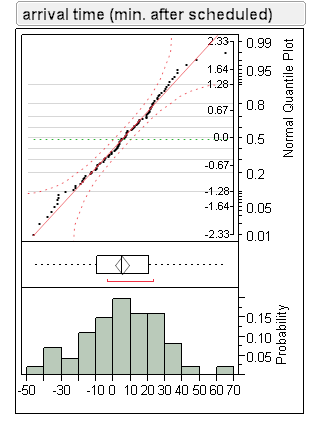

Cras sit amet nibh libero, in gravida nulla. Nulla vel metus scelerisque ante sollicitudin commodo. Cras purus odio, vestibulum in vulputate at, tempus viverra turpis. Fusce condimentum nunc ac nisi vulputate fringilla. Donec lacinia congue felis in faucibus.
In a sample of 25 male newborns, the mean birth weight was 3.4 kg and the standard deviation was 0.35 kg.
The z-score for a birth weight of 2.3 kg is _______. Round your answer to 2 decimal places.
| Correct Answer(s) |
|---|
| a. -3.14 |
| b. -3.13 |
| c. -3.15 |
Use the z-table to answer the following question: Assume the distribution of IQ scores for adults can be modeled with a normal model with a mean score of 100 points and a standard deviation of 10 points. What percentage of adults have an IQ score of less than 87 points?
| a. 4.46% |
| b. 15.15% |
| c. 9.68% |
| d. 90.32% |
| e. 84.85% |
A nutrition laboratory tests a random sample of 41 reduced sodium hot dogs, finding that the mean sodium content is 340mg, with a standard deviation of 35mg.
The 99% confidence interval for the population mean is (325.22 mg, 354.78 mg). Select the correct interpretation of this confidence interval.
| a. We are 99% confident that the mean sodium content of the 41 sampled hot dog is between 325.22 mg and 354.78 mg. |
| b. 99% of all hot dogs from this brand will have a sodium content between 325.22 mg and 354.78 mg. |
| c. We are 99% confident that the mean sodium content of all hot dog from this brand is between 325.22 mg and 354.78 mg. |
| d. The mean sodium content of all hot dog from this brand is between 325.22 mg and 354.78 mg. |
How much time do you need on average to catch your next flight when you have a layover? A random sample of 103 flights from last year indicated an average arrival tiem of 5.07 minutes after the scheduled time with a standard deviation of 22.1 minutes.
Match the condition/assumption on the left with the description in the context of the problem on the right.
| Condition/Assumption | Context |
|---|---|
| 1. Randomization condition [a] | a. The flights were randomly selected |
| 2. 10% condition [c] | b. The histogram is unimodal and symmetric and the normal quantile plot appears to be a straight line. |
| 3. Nearly normal condition [b] | c. 103 flights is less than 10% of the population. |